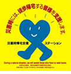
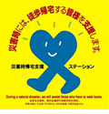

災害時帰宅支援ステーション

災害時帰宅支援ステーションとは
 大規模災害により交通が途絶したときに、帰宅困難者への支援を実施してくれる店舗・場所を、災害時帰宅支援ステーションといいます。 各店舗には上記の災害時帰宅支援ステーション・ステッカーが掲出されています。受けられる支援
災害時帰宅支援ステーションでは、以下の支援を受けられます。 ・水道水及びトイレの提供 ・通行可能な道路等の情報の提供
災害時帰宅支援ステーションとは
 大規模災害により交通が途絶したときに、帰宅困難者への支援を実施してくれる店舗・場所を、災害時帰宅支援ステーションといいます。 各店舗には上記の災害時帰宅支援ステーション・ステッカーが掲出されています。受けられる支援
災害時帰宅支援ステーションでは、以下の支援を受けられます。 ・水道水及びトイレの提供 ・通行可能な道路等の情報の提供